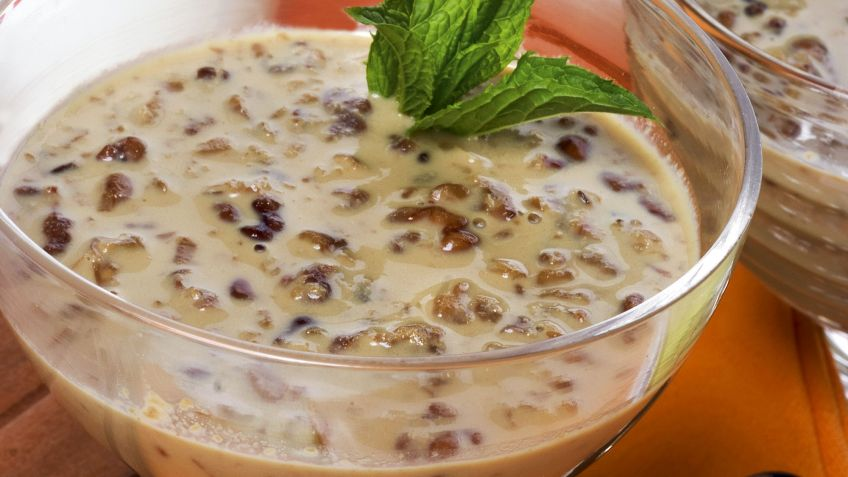

Postres
Crema pastelera
Ingredientes (Para 1/2 litro de leche)
- 12 canutillos
- 1/2 l. de leche
- 2 yemas de huevo
- 1 huevo
- 100 gr. de azúcar
- 30 gr. de harina de maíz refinada
- 1 rama de vainilla
- 1/2 cucharadita de jengibre
- hojas de menta
Elaboración
- Para la crema pastelera, pon a calentar la leche en una cazuela (reserva un poco) con el interior de la vainilla y el jengibre. Cuando empiece a hervir, retira la cazuela del fuego.
- Pon 60 gr. de azúcar y la harina de maíz refinada en un cuenco. Mezcla bien. Vierte la leche reservada anteriormente y sigue mezclando. Incorpora las yemas y el huevo. Bate hasta que quede una masa homogénea.
- Vierte un poco de leche a la mezcla de los huevos. Remueve bien y vuelca todo a la cazuela. Cocínala a fuego suave (sin dejar de remover) hasta que espese.
- Reparte la crema en 4 recipientes. Iguala las superficies y deja que se templen. Espolvoréalas con el resto del azúcar y quémalas con el soplete. Adorna con unas hojas de menta y acompáñalas con los canutillos.

Intxaursalsa, crema de nueces tradicional vasca
Ingredientes (4 personas)
- 500 gr de nueces
- 6 cucharadas de azúcar
- 1,5 litros de leche
- hoja de menta (para decorar)
Elaboración
- Casca las nueces y saca el fruto. Colócalas en un paño y tritúralas dándoles golpes suaves con un mazo de madera.
- Calienta la leche en una cazuela.
- Añade el azúcar y las nueces y deja cocer todo a fuego lento durante 60-70 minutos, removiendo de vez en cuando.
- Retira del fuego y deja que se temple.
- Decora con unas hojas de menta y sirve.
- Puedes tomarla fría, templada o caliente, según tu gusto.
